THE POWER
RANKINGS.
Thirty teams, one board, and no fake neutrality. This is how 4 Da Kulture sees the league entering 2026–27 — who can win it, who has something to prove, who is one move away, and which rebuilds should care more about February than October.
Jump To A Team
The order remains locked at 1–30. Every original evaluation, photo, strength, concern and measuring stick remains below. We added fresh observations to every team following the completed 2026 preseason—not a re-rank, not a rewrite. An exhibition flash is evidence to watch, not proof that a team's ceiling has changed. Opening week decides what holds up.
Oklahoma City Thunder
The standard stays the standard.
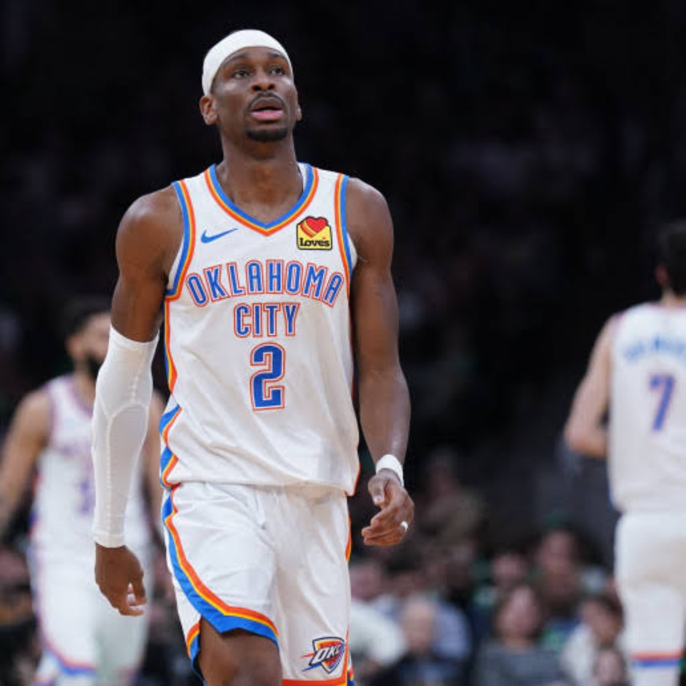
We have Oklahoma City at No. 1 because no team enters the season with a cleaner combination of elite talent, depth, continuity and defensive versatility. Shai Gilgeous-Alexander is in his prime, the rotation already knows how to play together, and the Thunder can win games in more than one style without having to reinvent themselves every night.
The regular season is almost beside the point now. We already know this group can stack wins. The question is whether the frontcourt can hold up when the postseason turns into a series-by-series wrestling match. Chet Holmgren is the swing. Against elite size — especially teams built around dominant bigs — Oklahoma City needs more rebounding, more physical finishing and more resistance when the game gets ugly.
That is why our measuring stick is simple: the playoffs. Another monster regular season will not teach us much. If Chet handles the physical matchups better and the supporting cast stays healthy, this is the deepest team on the board and the safest No. 1 entering the year.
Houston gave OKC a reality check
Oklahoma City's 116–89 preseason loss in Houston was a useful reminder that the Thunder are not invulnerable to pressure inside. Houston got downhill early, built a cushion and controlled the tempo even though OKC had enough firepower to make portions of the game competitive. We are not moving a championship-caliber Thunder team because of one exhibition loss, but we are circling how their frontcourt responds when a physical opponent owns the paint and makes their small advantages disappear.
The opener against San Antonio goes straight to the concern in our original write-up. Wembanyama's length changes passing windows, his evolving facilitation changes help responsibilities, and Chet Holmgren will be asked to provide more than weakside blocks and floor spacing. We want Chet initiating contact, finishing through size and being present on the glass, while Shai makes the correct reads against unusual rim protection. OKC remains our No. 1 because the roster has already earned trust. Preseason tells us what to examine, not whom to crown.
New York Knicks
The champs get hunted now.
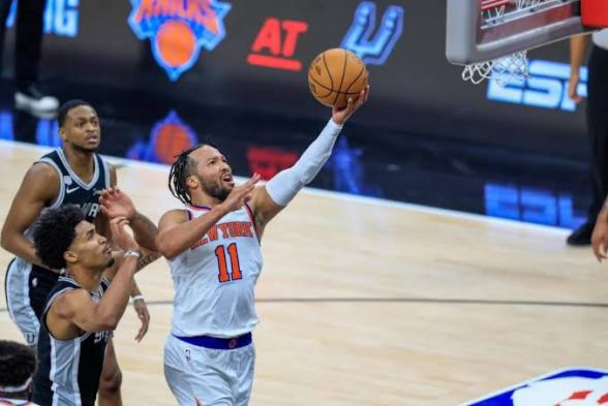
New York gets the defending-champion respect. We are not overthinking it. This team already proved its style works when the games get slow, physical and personal. The Knicks can defend, create late in the clock and survive the kind of possession-by-possession pressure that breaks younger teams.
The challenge changes now. Last year they were the hunter. This year every opponent gets up for them. Every playoff team studies the championship film. Every rough stretch becomes a headline. That is the tax that comes with wearing the crown.
For 4DK, the question is not whether New York can win 50-plus games. The question is whether the same toughness and half-court discipline still hold when the entire league has spent an offseason planning for them. The bar is another Finals run. Anything less will feel different after what they just accomplished.
A champion's offense can still look uneven
New York spent much of the preseason looking like a team searching for its rhythm, then finished with a 122–120 win over Toronto. Jalen Brunson scored 20 in the finale, but the more interesting number belonged to Karl-Anthony Towns: nine assists, to go with 15 rebounds. That is the type of playmaking from a scoring big that can make it harder to load up on Brunson once the games matter. The early losses did not erase the title, and one late win did not fix every offensive possession.
The Knicks' first test against Philadelphia will reveal how much of that ball movement survives under pressure. Can Towns create easy looks instead of settling? Can Bridges, Anunoby and Hart punish a rotating defense without Brunson having to restart every possession? The defensive identity is proven; the next step is finding more quality offense without turning every close game into a Brunson bailout. We leave the champions at No. 2, but their preseason exposed a worthwhile offensive challenge for the repeat chase.
San Antonio Spurs
The future arrived early.
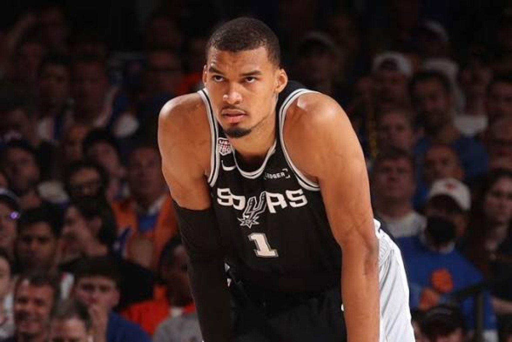
San Antonio is no longer a cute young-team story. They won 62 games, reached the Finals, and now the expectation is a championship. Victor Wembanyama has already changed what the ceiling of this roster looks like. When he is on the floor, the Spurs can build an elite defense around one player while still playing through him as an offensive hub.
The interesting part is the guard hierarchy. De'Aaron Fox still brings speed and clutch creation, Stephon Castle keeps growing, and Dylan Harper already showed enough postseason promise to demand real responsibility. That is a good problem, but it is still a problem the coaching staff has to solve. Fox cannot simply play the same role forever if Castle and Harper keep expanding.
Tobias Harris gives them veteran scoring and stability, while Jayden Quaintance and Tarris Reed Jr. give San Antonio more young size to develop behind Wemby. The concern remains the minutes when Wemby sits and the way the guard roles fit together in playoff basketball. None of that lowers the bar, though. This is a title-or-bust level team now.
The three-guard experiment is officially real
San Antonio's final preseason dress rehearsal, a 126–97 win over Sacramento, turned the Fox–Castle–Harper debate from theory into a real basketball question. Dylan Harper scored 19 and made a strong second-half push; Wembanyama supplied 14 points, eight rebounds and two blocks. Earlier against Phoenix, Wemby had 19 points and four blocks while Castle scored 18. The Spurs also tested Wemby's playmaking through the preseason, showing he can direct an offense as much as finish it.
The planned Fox, Castle, Harper, Vassell and Wembanyama starting group has three creators, but we are not assigning a verdict before seeing regular-season possessions. Our questions are floor spacing, defending bigger wings, rebounding and who handles the ball when Shai forces switches. Harper can grow into a huge weapon if the guards rotate creation duties rather than taking turns in isolation. We believe Wemby's takeover season is possible, but OKC on opening night will tell us considerably more than any exhibition win. That is why the Spurs stay No. 3.
Philadelphia 76ers
Too much talent for excuses.
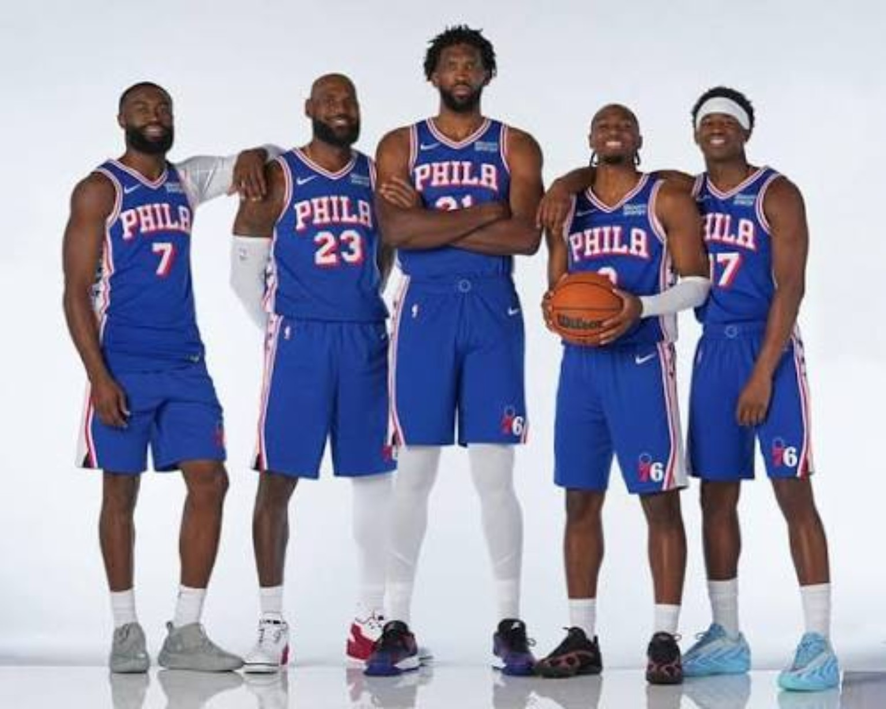
Philadelphia loaded the roster around Joel Embiid with Jaylen Brown, LeBron James, Anfernee Simons, Kentavious Caldwell-Pope and Dean Wade while keeping Tyrese Maxey and VJ Edgecombe in the long-term picture. That is enough high-end talent to make the expectations obvious.
Maxey has to remain a real creator, not just the young guy who gets pushed aside by bigger names. Brown gives Philly a championship-level two-way wing role. LeBron does not need 2018 usage anymore; he needs to organize possessions, manipulate coverages and make life easier for everybody else. Edgecombe still matters because he is the bridge to whatever comes after this veteran window.
Everything still comes back to Embiid. If his body cooperates, this team has one of the best top-end rotations in basketball. If his mobility is compromised again in May, the entire structure changes. With this much help, the standard cannot be another respectable playoff exit. The Finals are the minimum target.
The chemistry is promising; the late possessions still need work
Philadelphia's 125–120 overtime preseason loss to Boston showed both sides of a loaded roster. Embiid had 27 points, eight rebounds and five assists; Maxey scored 22; Jaylen Brown added 20 and eight rebounds. LeBron contributed eight points, eight rebounds and seven assists, which is closer to the point-forward orchestration we want than an old-fashioned scoring race. There was real offensive balance while the starters played, but the Sixers still surrendered a lead against Boston's reserves and lost the finish.
That contrast should guide the entire opening month. Maxey cannot lose his burst waiting for somebody else's turn. Brown needs downhill touches, Embiid needs timely post entries and LeBron must read which defender is already compromised. VJ Edgecombe can help without plays called for him by cutting and attacking tilted floors. The biggest thing we want is not one designated closer: it is five guys agreeing on the best shot, especially under playoff-level pressure. The ceiling remains Finals-caliber, but there is no shortcut to timing and trust.
Minnesota Timberwolves
Ant finally has another elite creator.
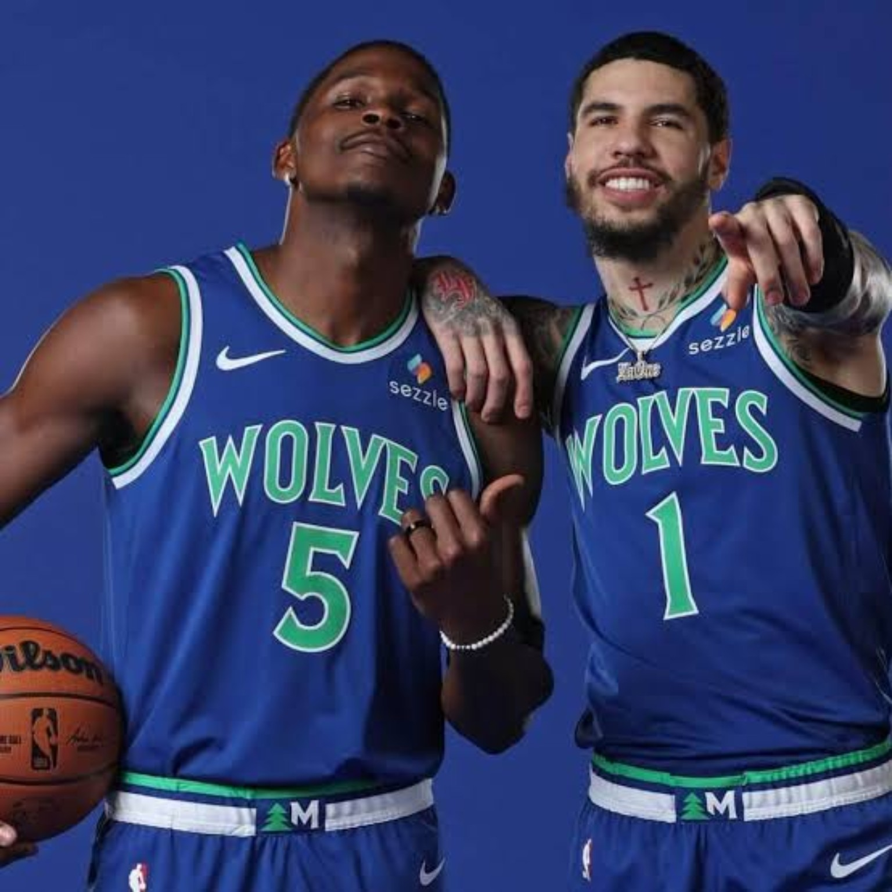
Minnesota made one of the boldest swings of the offseason by pairing Anthony Edwards with LaMelo Ball. That matters because Ant has spent too many possessions having to create everything himself. LaMelo gives him a true playmaking partner who can bend the defense before Ant ever touches the ball.
Jonathan Kuminga is the swing piece. Minnesota does not need him to hijack the offense. It needs him to defend, rebound, run, cut, punish mismatches and give the lineup more athletic pressure. Jaden McDaniels is the other ceiling changer. If his offense rises into the 16-to-18-point range without losing the defense, Minnesota gets much harder to scheme against.
The concern is replacing the size, scoring and rebounding lost with Julius Randle and Naz Reid while managing health across a deep season. Rudy Gobert still gives them a defensive floor, but playoff matchups will test him again. With Ant entering MVP-level expectations and LaMelo now beside him, the measuring stick is the Finals.
The new pieces create opportunities and new trade-offs
Minnesota's preseason win at Madison Square Garden offered an encouraging flash of the new direction: Anthony Edwards scored 26 against the Knicks and showed how dangerous the offense can be when he attacks without constantly creating the entire possession. LaMelo Ball's arrival puts another gifted passer next to him. But Chicago's 133–116 preseason finale win over Minnesota also reminded us that this roster cannot assume opponents will struggle to score on it.
The two things we are studying are how often LaMelo gets Ant an advantage before the catch and whether Kuminga finds productive offense without stopping the ball. Gobert and McDaniels must cover a lot defensively when the lineup pushes pace or uses smaller, faster players. With Randle and Reid gone, somebody must replace reliable size and second-chance work. The Wolves belong in our top five because Ant is ready and the ceiling is serious; they have to show that the new creativity did not cost too much defensive structure.
Miami Heat
The Giannis effect changes everything.
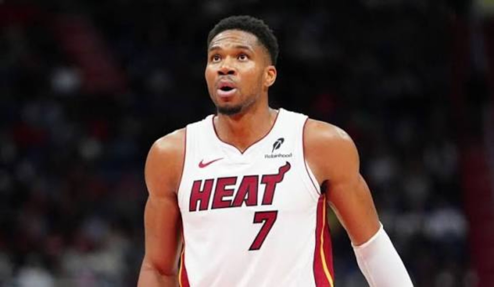
Giannis Antetokounmpo in Miami changes the entire East. Put him beside Bam Adebayo and the Heat can build one of the most violent defensive frontcourts in basketball. Add shooting from Klay Thompson, Tim Hardaway Jr., Andrew Wiggins and Bobby Portis and the fit starts making sense fast.
The concern is what happens when a playoff defense walls off Giannis and the game turns into five possessions of half-court isolation. Miami moved on from Tyler Herro and Norman Powell, so somebody has to manufacture offense late. Davion Mitchell can organize and defend, but he is not a proven closer. Bam's passing, screening and willingness to shoot open threes will matter a lot.
Klay is the X-factor because the spacing has to stay honest. If his shooting still bends a defense, Giannis and Bam get cleaner paint touches. This roster is older, so workload management matters, but the upside is obvious. Eastern Conference Finals is the minimum. The Finals are a real expectation.
Giannis already looks like the offensive engine
Miami's 144–128 preseason win over Brooklyn provided the clearest early glimpse of its new identity: Giannis delivered 20 points, 15 rebounds, nine assists and three blocks in only 24 minutes. It was not merely power at the rim. He made quick reads, created easy offense for others and pushed the ball before the defense could get organized. When that version of Giannis is sharing the floor with Bam, the Heat can turn defense and rebounding into instant offense without asking one guard to dribble for 15 seconds.
Orlando's 136–115 win over Miami in the finale was the counterpoint. The Heat still need dependable perimeter answers and spacing around two interior stars, especially when the initial break is denied. We want to watch how Klay and the other shooters relocate as Giannis attacks, and whether Bam's elbow passing opens the weak side. Giannis is the headline, but whether this group can manufacture a quality half-court shot late in a close game will tell us more than a giant preseason score.
Houston Rockets
The young core owns the future. KD owns the moment.
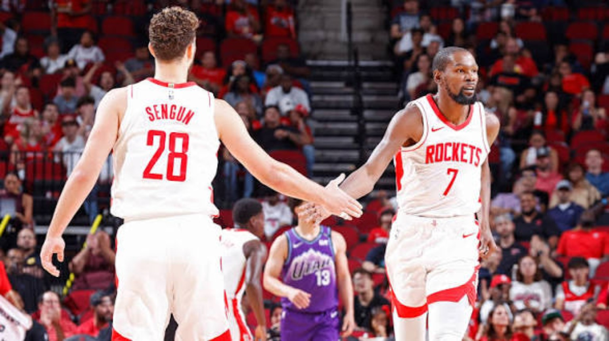
Houston added Bogdan Bogdanovic and Marcus Smart to a group already built around Kevin Durant, Amen Thompson, Alperen Sengun and Jabari Smith Jr. The identity is still physical. They rebound, defend, play with size and can make a series uncomfortable before the skill even enters the conversation.
Amen is the player who can change the long-term hierarchy. He already put up 18.3 points, 7.8 rebounds and 5.3 assists while defending at a high level. If the jumper becomes even respectable, Houston may have a future No. 1 or 1B already in place. Sengun still has to prove his offense translates when the postseason gets ugly.
Fred VanVleet's ACL return and Kevin Durant's age make the regular season partly about preservation. Houston needs enough from Smart, Bogdanovic, Reed Sheppard and the rest of the depth to keep KD fresh for May. This team should not be judged by winning a first-round series. The measuring stick is the Western Conference Finals.
Houston's movement looked different
The Rockets' 116–89 preseason win over Oklahoma City jumped out because of how the ball moved, not merely the final margin. Fred VanVleet handed out eight assists without a turnover, Bogdan Bogdanovic hit five threes and Houston attacked with far more willingness to move the ball to the next advantage. The team launched 53 three-point attempts. That is not automatically the shot profile they should chase every night, but it points to a quicker, more spacious offense around Durant, Sengun and Amen Thompson.
We were encouraged by Tari Eason's stronger off-the-dribble work and the way Amen and Sengun found each other when a defense leaned toward the paint. The risk is that extra shooting comes at the expense of rebounding or the defensive identity that got Houston here. Reed Sheppard's shooting also creates an interesting minutes dilemma behind experienced guards. If Udoka can blend the new spacing with last year's physicality, Houston becomes far more difficult to prepare for in a series. The West is crowded; this version has another gear.
Cleveland Cavaliers
The talent is real. The playoff offense has to catch up.
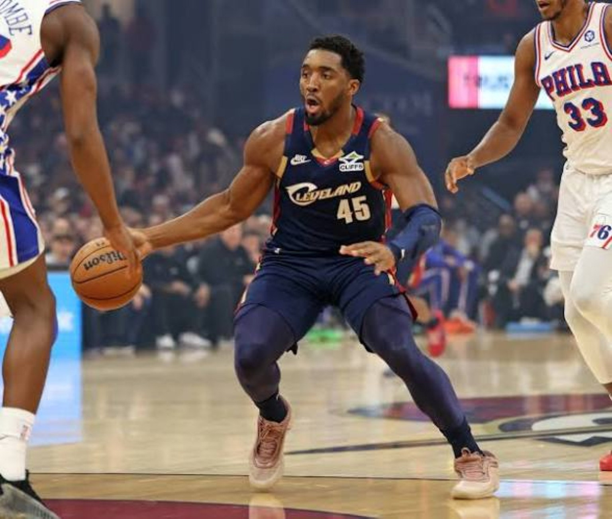
Cleveland has Donovan Mitchell, James Harden, Evan Mobley and Jarrett Allen. That is enough talent to win a lot of regular-season games. It is also enough talent that another playoff offense falling apart cannot be brushed off as bad luck.
Harden should not be chasing a scoring title. We want him around 20 points and 9 or 10 assists, organizing the game and taking creation pressure off Mitchell. The defensive question is obvious: teams are going to hunt that backcourt in a series. Peyton Watson matters because Cleveland needs athletic wing defense around them.
Mobley is the swing. If he becomes a reliable 20-point scorer and can spend more time at center, Cleveland's ceiling changes. That is also why Jarrett Allen remains a logical trade chip if a real two-way wing becomes available. The standard is the Eastern Conference Finals.
The second unit is not a small detail
Cleveland's preseason ended with a 132–116 loss to Orlando, and we saw a team still trying to sort out its new support pieces. Donovan Mitchell looked comfortable distributing in his minutes, while rookie Meleek Thomas delivered 16 points, 14 in the fourth quarter. Peyton Watson and Mario Hezonja offered glimpses of the length, versatility and secondary offense that the Cavs were trying to find. Those aren't small things for a club that keeps hitting a wall against better playoff matchups.
The backcourt remains the pressure point: Harden can organize everything and Mitchell can score against anyone, but opponents will keep probing how much perimeter resistance surrounds them. Mobley's willingness to attack mismatches and the availability of reliable two-way wings matter more than winning a preseason game. We also want clarity on the backup point guard minutes so Cleveland does not lean on its stars in every possession. The roster still justifies our No. 8 slot, but the exhibition tape reinforced that the supporting cast has to prove itself.
Denver Nuggets
Jokic keeps the floor high. The defense decides the ceiling.
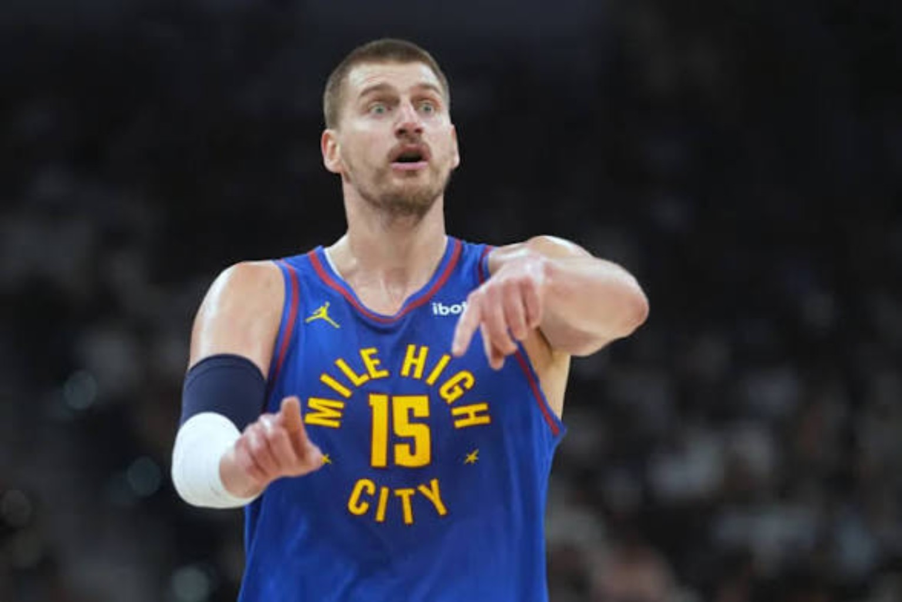
As long as Nikola Jokic is healthy, Denver will have one of the best offenses in basketball. That part is not complicated. The question is whether the rest of the roster can give him enough defense and playoff shot creation to avoid another early exit.
DeMar DeRozan gives Denver another half-court scorer and can function as a sixth-man type who stabilizes non-Jokic minutes. Cam Johnson supplies spacing. Aaron Gordon still does the connective work. But losing Peyton Watson hurts the perimeter defense, and the Nuggets need Christian Braun and rookie Alpha Diallo to absorb real two-way responsibility.
Jamal Murray remains the pressure point. Denver needs the playoff version from 2023, not just good regular-season production. If he is healthy and aggressive, Jokic has enough help to make another deep run. If not, the defense is not strong enough to cover for a second option who fades.
Jokic does not need a box-score explosion to run a game
Denver ended the preseason beating the Lakers 121–106. Jamal Murray set the tone with 21 points, including a big early burst, while Nikola Jokic recorded eight assists and produced another outrageous transition pass. That second detail matters: Denver can still create easy looks from a pass other teams would not even attempt. Jokic's orchestration is not the question. The question is who turns those opportunities into dependable points when the defense loads up on him for seven games.
Murray looking decisive is encouraging, but we want it every week, not a highlight followed by a quiet stretch. DeRozan's scoring is useful precisely because he can steady possessions when Jokic rests. We also need to see whether Braun and the young wings can defend enough to keep Denver's best offensive group on the floor. The Nuggets aren't climbing on the basis of a preseason win, but their finale illustrated the blueprint: intelligent passing, assertive Murray and a few more reliable scoring and defensive minutes outside the stars.
Detroit Pistons
Sixty wins changed the standard.
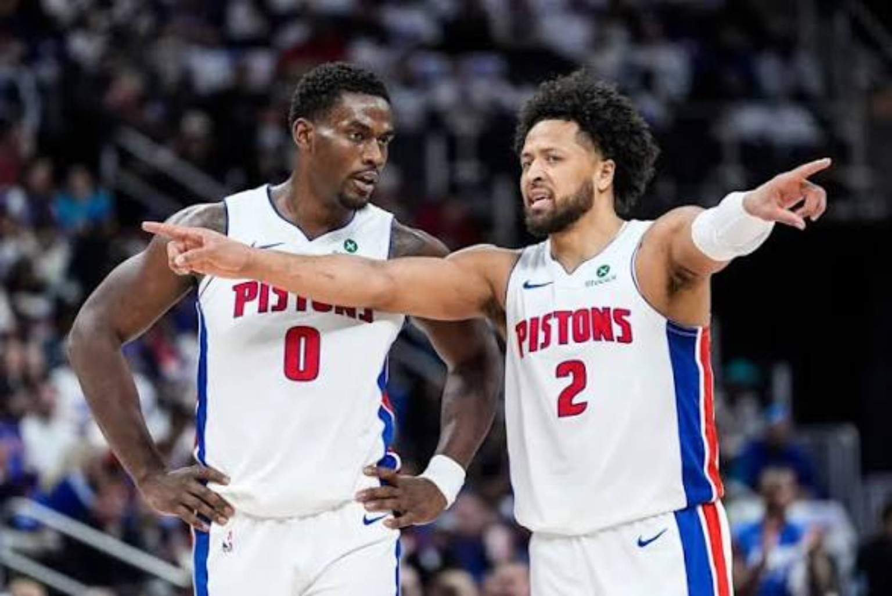
Detroit is not sneaking up on anybody anymore. Cade Cunningham led a 60-win team, Jalen Duren became an All-Star and Third Team All-NBA center, and the Pistons now have to prove that last year's regular-season jump was the beginning of something rather than the high point.
Duren is under the microscope. Nineteen-and-a-half points and 10.5 rebounds on 65 percent shooting is serious production, but the playoffs exposed the gap between regular-season dominance and reliable postseason impact. We need better defensive positioning, communication, rim resistance and a more dependable offensive role when teams take away easy finishes.
Ausar Thompson may be the second-most important long-term piece on the roster. If he can become a 14-to-16-point scorer while remaining an elite defender, Detroit gets another huge two-way advantage. John Collins gives them another scoring forward, while Ron Holland and Ebuka Okorie add developmental upside. We do not care if they match 60 wins. We care whether they reach the Eastern Conference Finals.
Duren's new deal starts with a statement
Detroit got a striking first look at its newly extended center when Jalen Duren scored 24 points on 8-for-9 shooting in just 15 minutes against Minnesota. It was another reminder of how quickly he can overwhelm a defense as a finisher and offensive rebounder. The Pistons later ended their preseason with a 129–125 victory over Toronto, as Cade Cunningham supplied 18 points and seven assists. The team looked ready to use its physicality immediately rather than ease into the schedule.
Our projection for Duren is around 21 points and 11 rebounds, but that isn't the whole standard. We want more blocks and better rim decisions, especially when he has to guard without fouling. We were also encouraged by Ausar Thompson showing more aggression and confidence taking the ball to the rim; that has to be joined by a jumper opponents respect. If Ausar's offense improves and Duren keeps producing against playoff-level coverage, Detroit's ceiling rises. The key word is translation: the production has to survive May.
Los Angeles Lakers
Healthy Luka changes every series.
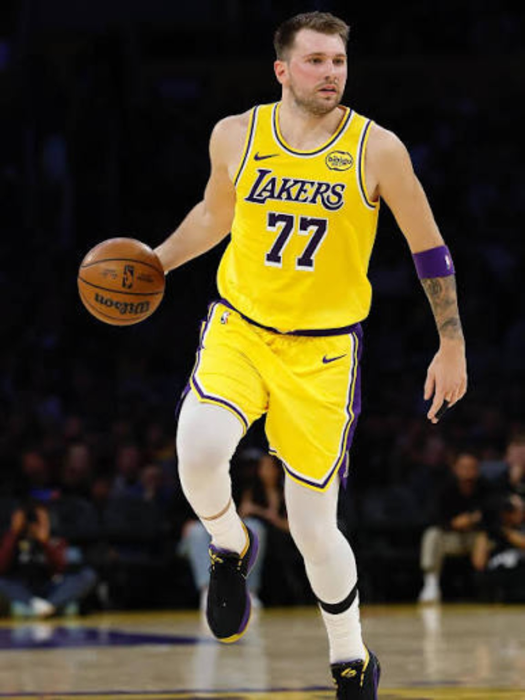
The Lakers are entering a completely new chapter without LeBron James, but they are not entering a rebuild. They still have Luka Doncic. And if Luka is healthy in April, we believe the Lakers can beat anybody in a seven-game series.
Austin Reaves now has to absorb much more of the creation load. Twenty-three points a game was already strong; this season may require something closer to 25 points and seven assists. Walker Kessler is a major upgrade at center because his rim protection, screening, rebounding and vertical spacing cover weaknesses that have hurt this roster for years.
Quentin Grimes will have a huge perimeter-defense burden, while Collin Sexton gives the bench a real scoring punch. The biggest question is how the offense survives the loss of LeBron as the other elite organizer. The preseason rank is No. 11, but the playoff ceiling is championship level if Luka is right.
The post-LeBron roles are getting tested early
Los Angeles' 121–106 preseason loss to Denver showed the work still ahead for Luka's team. Austin Reaves scored 19, Luka had 15 in limited first-half action and newcomer Ziaire Williams supplied a quick scoring spark. Williams' size and willingness to defend have made the final wing spot worth watching, while Kessler gives the group a more conventional interior target. The problem was familiar: a talented starting group can still get disorganized when opponents force turnovers and make them guard several actions in a row.
We still want Reaves close to a genuine 25-and-7 type of impact without turning every possession into an isolation contest. Luka will create offense, but the team needs timely cutting, shooting and a low-maintenance defensive wing. The Williams/Grimes/Thybulle combinations may tell us as much as another 30-point Luka game. We are not judging this Lakers edition by a meaningless October record. The question is whether the defense and secondary creation are sturdy enough to avoid depending on Luka magic every fourth quarter.
Toronto Raptors
Scottie's team just added Kawhi Leonard.
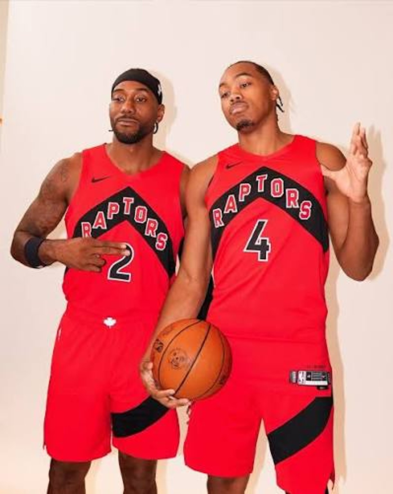
The cleanest way to frame Toronto is simple: Scottie Barnes' team just added Kawhi Leonard. Kawhi may lead the team in scoring, but Scottie is still the best playmaker, the younger two-way centerpiece and the player whose growth should define the next era.
Kawhi gives Toronto a proven closer and another elite wing defender when healthy. RJ Barrett gives them a third scorer who can handle late-game possessions, while Immanuel Quickley keeps the offense from becoming too wing-heavy. The talent is real enough to win around 50 games.
Scottie's next step is getting into the 21-to-22-point range while making enough threes that defenses cannot sag off him. Kawhi should be managed with April in mind. If both are healthy, Toronto has Eastern Conference Finals upside.
Scottie's all-around force was hard to miss
Toronto's narrow 122–120 preseason loss in New York offered a better test than the previous blowout between these teams. Scottie Barnes scored 23 on 9-for-15 shooting, knocked down four threes and blocked four shots. RJ Barrett added 21, Immanuel Quickley added 18 and Kawhi Leonard logged limited scoring work as the group continued learning one another. That is the template we prefer: Scottie impacting every section of the game while the wings and guards supply enough individual scoring to stop teams from loading up.
Kawhi's arrival is a major ceiling raiser, but this still must be Barnes' long-term team. Can he be aggressive as a shooter without losing the passing or defense? Can Quickley keep the tempo moving so every action doesn't die waiting for an isolation? And can Toronto sustain its disruptive defensive possessions against top teams? The preseason hinted at serious two-way potential, but roles will have to be clarified as the schedule gets tougher.
Boston Celtics
Tatum can carry a lot. He should not have to carry everything.
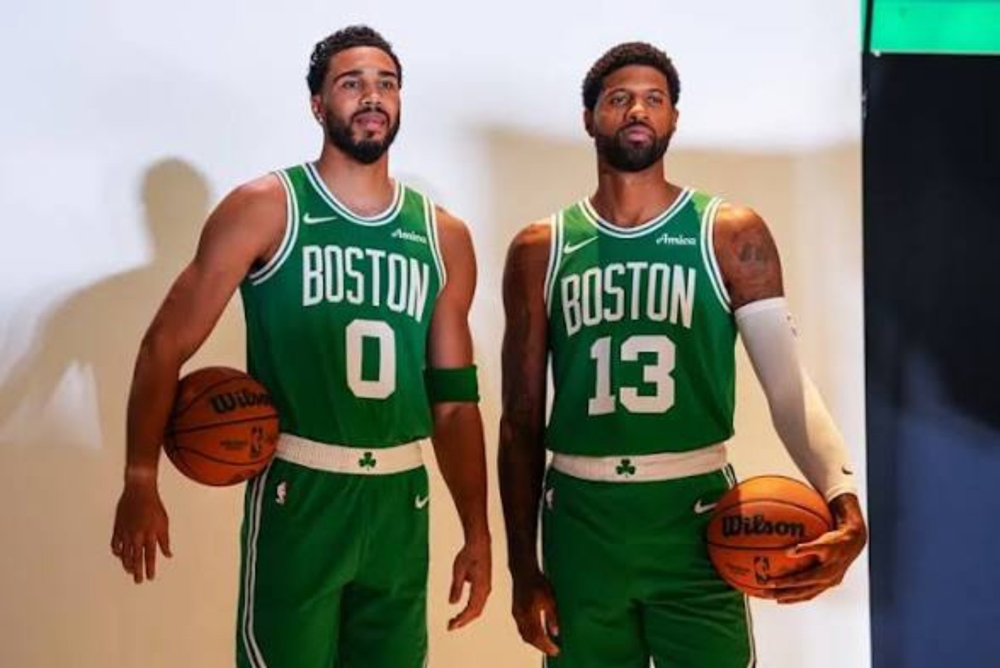
Boston won 56 games with Jayson Tatum appearing in only 16, then reshaped the roster around him. Jaylen Brown is gone. Paul George came back in the deal. Mitchell Robinson strengthens the frontcourt. The question is whether the pieces around Tatum are good enough to keep his prime from being spent carrying too much.
If Tatum gives Boston 28-to-30 points, around nine rebounds and five or six assists, he can be in the MVP conversation. Payton Pritchard becoming a 20-point, six-assist guard would change the whole roster calculus. Derrick White remains a winning two-way piece. Paul George does not need to be a star every night, but Boston needs health, efficient scoring and dependable defense from him.
The deadline matters. If Boston is stuck around fifth through seventh and clearly missing another playoff creator, everybody except Tatum should be negotiable for a real star. Devin Booker remains the dream fit, with De'Aaron Fox and Ja Morant as different kinds of upside swings.
An unbeaten preseason, with a real warning inside
Boston finished the preseason 4–0, including a 125–120 overtime win in Philadelphia powered by its reserves. Hugo Gonzalez scored 21 in that comeback, after Tatum had put together 19 points, eight rebounds and six assists against Charlotte. Derrick White had 17 and four steals in that Charlotte game. Those performances suggest a deeper rotation than some expected and an opportunity to keep the veterans fresher. They do not prove Boston has replaced everything it lost with Jaylen Brown.
Our questions remain exactly where they were: Tatum can score 28–30 a night, but can Pritchard take a 20-point step without becoming predictable? Will White remain the defensive glue while supplying efficient creation? Does 36-year-old Paul George have enough available, quality two-way minutes left to keep the offense connected? Watch who actually bends Detroit's defense when Tatum gets crowded. Winning a preseason finale with the second unit is encouraging; proving the new structure works with the starters is the real assignment.
Orlando Magic
The offense finally has to become as serious as the defense.
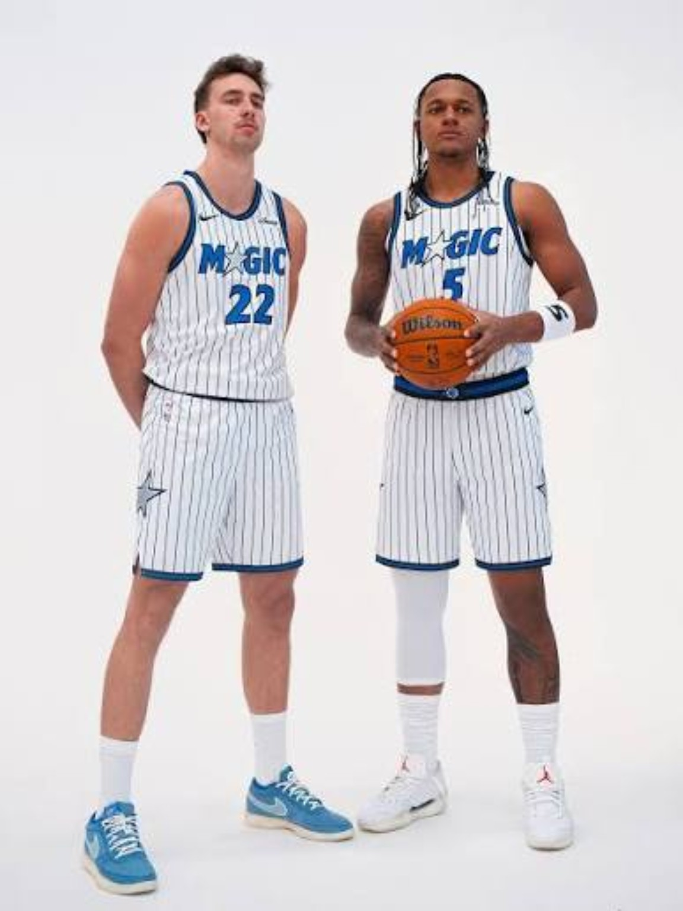
Orlando already had Desmond Bane last season, and that continuity matters. Paolo Banchero is the primary star, Franz Wagner is the smoother secondary initiator, and Bane gives the team something we trust late: physical shot-making with enough strength and edge to punish switches.
Bane averaged around 20 a night and may actually be the guy we trust most for a clean late-game shot. He is a mini enforcer in this lineup — strong, physical and not bothered by playoff contact. Paolo's next step is not forcing 28 points a game. It is getting to 24 or 25 with better efficiency and a more dependable jumper.
Sean Sweeney has to establish a hierarchy that lets Paolo, Franz and Bane breathe on the same floor. Jalen Suggs can close games defensively, and Anthony Black should still get meaningful development. We want 50 wins, but the real measuring stick is finally winning a first-round series.
The perimeter shooting is no longer just hypothetical
Orlando's 136–115 preseason victory against Miami showed exactly what a Paolo-led offense can look like when outside threats do their jobs. Paolo Banchero had 24 points and seven rebounds, while Desmond Bane scored 23 and drilled seven three-pointers. Seven Magic players scored in double figures. Those are exhibition numbers, but the shot distribution is what matters: Bane forcing defenses to stay attached gives Paolo room to attack instead of meeting a crowd every time he turns the corner.
Orlando also closed out Cleveland 132–116 earlier in the week, another encouraging glimpse of an offense that can create without giving up its defensive identity. The next hurdle is getting the same movement on nights the jumpers aren't falling. We want Paolo reading doubles quickly, Franz Wagner finding clean lanes and a reliable guard rotation that gets the team organized late. The talent has looked ready for a bigger leap; the question is whether execution becomes a habit.
Indiana Pacers
Haliburton does not need huge numbers. He needs his body back.
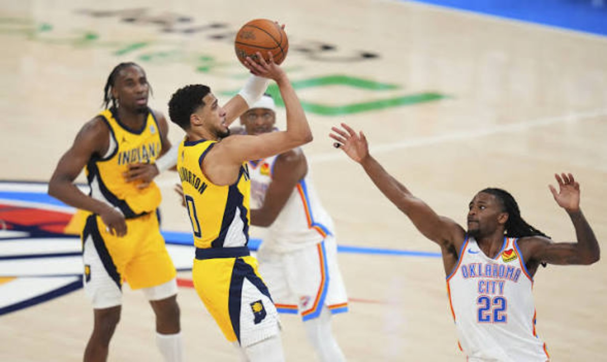
Indiana gets Tyrese Haliburton back after a full year recovering from the Achilles injury that changed the franchise's timeline. The important thing is not whether he averages 25. If he gives the Pacers around 18 points and 10 assists while controlling pace and making late-game decisions, the offense can work.
Pascal Siakam may lead the team in scoring again. Ivica Zubac gives them a real interior screen-and-roll partner and dependable rebounding. Andrew Nembhard remains a steady secondary creator, and Aaron Nesmith gives the perimeter defense its blue-collar identity.
The missing piece is Bennedict Mathurin's bailout scoring. Indiana needs somebody who can create a shot when the first two actions die. If Haliburton regains his burst, planting confidence and pull-up rhythm by April, this is the kind of team that can make another Eastern Conference Finals run.
Haliburton's rhythm is back, and the bigs have roles
Tyrese Haliburton's preseason return has been one of the more encouraging stories of October. He poured in 24 points in 17 minutes against Oklahoma City earlier in the week, then supplied 17 points and six assists against Milwaukee in the finale. Pascal Siakam added 24 against the Bucks, while Ivica Zubac made his presence felt on the glass, collecting 11 first-half rebounds. Those pieces make sense together: Haliburton controls the speed, Siakam hunts mismatches and Zubac gives the offense a sturdy screening and finishing target.
What hasn't been proven is durability and the defense behind the ball. The 128–127 overtime loss to Milwaukee isn't troubling by itself, but it was another lesson about getting quality stops and finishing possessions. We want Haliburton playing comfortably, not carrying a miracle comeback on the first week. If the Pacers get healthy playmaking with better rebounding, they can outperform this No. 15 starting position.
Atlanta Hawks
Jalen Johnson has the keys.
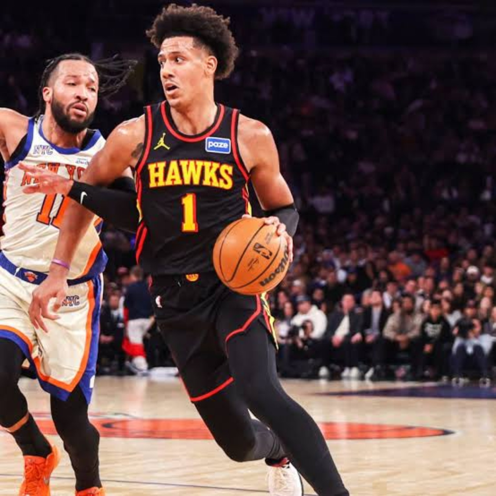
Atlanta belongs to Jalen Johnson now. A 22.5-point, 10.3-rebound, 7.9-assist season changed the franchise hierarchy and gave the Hawks a real young centerpiece. The next step is late-game control — knowing when to take over, when to create for others and how to close a series.
Nickeil Alexander-Walker scoring 20.8 a game while defending at a high level forces us to take his offensive growth seriously. He may still settle into an elite third-option role long term, but if the scoring holds, Atlanta may have more help for Johnson than it looked like six months ago.
The Jonathan Kuminga decision still hangs over this roster. Atlanta moved off a young athletic scorer who had already shown playoff value, and now the Hawks are looking for almost exactly that type of second option. Kingston Flemings and Zuby Ejiofor give the roster more young development, but the front office should still be hunting a younger high-end scorer beside Johnson.
Atlanta found another way to score in bunches
The Hawks closed the preseason with a 135–111 win in Dallas, and Nickeil Alexander-Walker's 25 points and six threes made the biggest impression. Atlanta shot 41.2 percent from outside. That's the type of spacing Jalen Johnson needs if he's going to be the unquestioned offensive centerpiece and not spend every possession attacking a loaded paint. NAW's scoring is more than a bonus if he can do it while keeping his defensive assignment honest.
This preseason performance strengthens our interest in Atlanta's depth of creation without changing the ranking. The question is whether the Hawks can defend well enough to turn those offensive bursts into sustained winning. We want Johnson attacking early, the wings making rapid decisions and the young bigs bringing energy that translates without requiring plays to be run for them. A 135-point exhibition night is a flash. Establishing structure on both ends is what could push this team up the board.
Golden State Warriors
The window is almost closed — Steph is still standing in it.
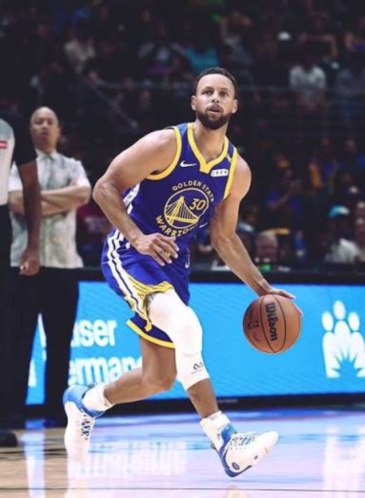
Golden State does not need another conversation about whether Steph Curry can still play. We know he can. The whole season should be designed around getting the freshest possible version of him to April.
That means De'Anthony Melton, Brandin Podziemski and Williams have to absorb more offense. Podziemski getting into the 15-to-17-point range with five or six assists would let Steph play more off the ball and spend fewer possessions rescuing bad second-unit offense. Melton's defense and secondary handle matter for the same reason.
Jimmy Butler's return is the biggest swing factor, and Kristaps Porzingis changes the ceiling whenever he is healthy. Rookie Yaxel Lendeborg looks like a natural Warriors connector: older, smart, strong, versatile and comfortable making winning plays without needing volume. If the veterans are healthy, nobody wants Golden State as a seven or eight seed.
A young forward might be crucial to the aging core
Golden State finished its preseason by beating Portland 128–118, with Curry scoring 20, Podziemski and Yaxel Lendeborg adding 17 apiece, and Draymond Green flirting with a triple-double: seven points, eight rebounds, 10 assists and three steals. Yaxel also showed his versatility in earlier preseason games. That matters with Jimmy Butler's recovery and lingering questions around how much frontcourt work veterans Green, Al Horford and Kristaps Porzingis can absorb over a long season.
Steve Kerr has experimented with Green playing away from the ball more instead of making every action flow through him. We like that if it reduces predictable passes and frees Curry to find quicker shots. But the defense is vulnerable if a fast guard gets two feet in the paint before help is set; Austin Reaves' scoring burst against Golden State was an early warning. Podz, Melton, Lendeborg and the rest of the role players must provide offense and perimeter resistance while the older pieces manage minutes. The team can be dangerous, but the supporting cast has to carry more than a ceremonial share.
Portland Trail Blazers
Too many guards, too many decisions, real talent.
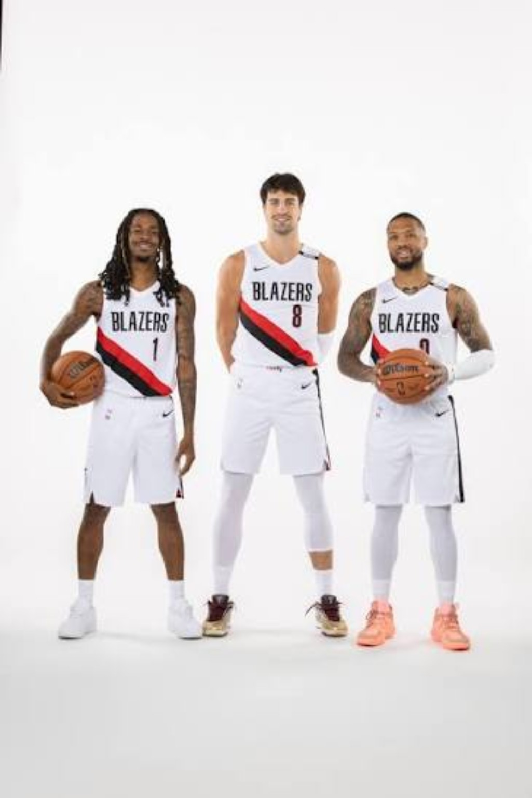
Portland may have the strangest backcourt in the league: Ja Morant, Scoot Henderson, Damian Lillard and Jrue Holiday. We do not believe all four are still there after the deadline. Jrue is the obvious veteran chip, Ja is the swing decision, Dame carries organizational weight, and Scoot still needs a clear development path.
Deni Avdija is already an All-Star. The question is not whether he can become one. The question is whether he can be the No. 1 option on a playoff team and whether that version of Portland can get out of the first round. Ja and Deni do not need a forced hierarchy in October; the season can tell us whether Deni remains the lead guy, Ja reclaims superstar form, or they become a 1A/1B pairing.
Micah Nori inherits a real pressure job after Portland moved on from Tiago Splitter, who did a hell of a job stabilizing the team. Nori does not have to reinvent Portland. He has to prove the change was worth making. Donovan Clingan becoming a defensive anchor and the guard logjam getting cleaned up are the other major checkpoints.
Portland's crowded backcourt has real firepower
Portland lost just once in preseason, closing with a 128–118 defeat to Golden State. In that finale, Ja Morant scored 19 on 8-for-10 shooting and hit all three of his threes; Damian Lillard put up 23. Those numbers are encouraging because the two guards represent different kinds of pressure. Ja changes the geometry by attacking the rim; Dame changes it the second a defender has to honor a screen 30 feet from the basket. That can create easy opportunities for Deni Avdija without asking him to manufacture everything.
But fitting Ja, Dame, Scoot Henderson and Jrue Holiday into a coherent rotation is still tricky. We do not want Scoot's development buried behind veterans, and we do not want a lineup of brilliant guards that can't contain anyone on the other end. Scoot's more composed preseason work is promising, but the hard part comes when the regular-season minutes tighten. Portland has the talent to surprise teams above it if the ball moves and the defensive pairings make sense. The No. 18 slot is an opening argument, not a ceiling.
Dallas Mavericks
This season belongs to Cooper Flagg.
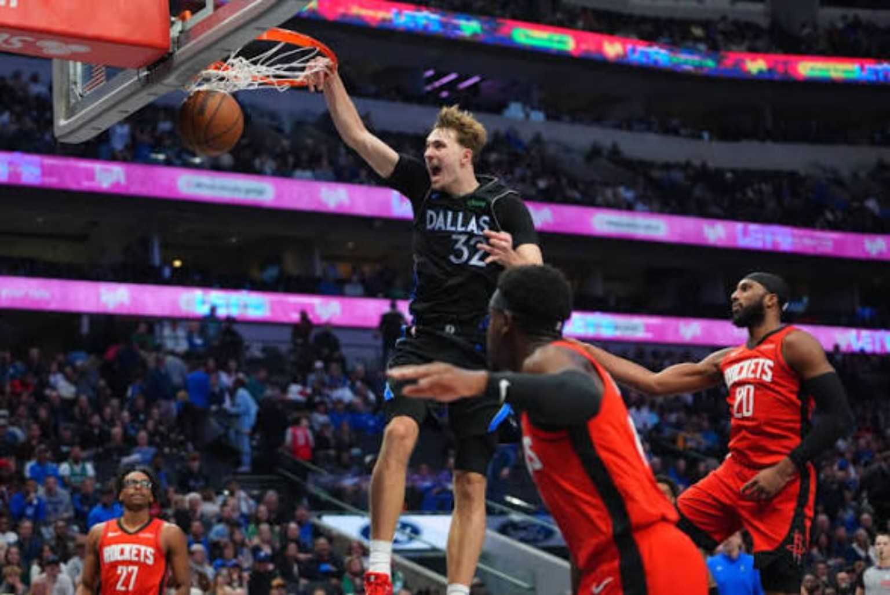
Cooper Flagg already gave Dallas 21 points, 6.7 rebounds and 4.5 assists as a teenager and won Rookie of the Year. Year 2 is where the franchise should start asking how much offense can actually run through him without taking away the defensive activity that makes him special.
Dusty May takes over with a familiar rookie in Morez Johnson Jr., who followed him from Michigan after a national-title run. Morez does not need touches. He needs to rebound, screen, defend, run and make Cooper's job easier. Max Christie is another young piece we want to see in a bigger two-way role.
Kyrie Irving is the complicated veteran. We would not dump him just because the timelines are different. If he comes back healthy, his shot creation can make Cooper's development easier while his trade value rebuilds. PJ Washington and Naji Marshall should also be evaluated as assets. Dallas should finish the season younger, clearer and more valuable around Flagg.
Cooper was terrific; the supporting defense wasn't
Dallas' 135–111 preseason loss to Atlanta was revealing even with the usual exhibition caveats. Cooper Flagg gave the Mavericks 26 points and 12 rebounds, while Kyrie Irving hit five threes and scored 18. Those are not numbers from a team without offensive star power. The problem was letting Atlanta get comfortable from deep and repeatedly turn defensive mistakes into points. Dallas also had to lean on its own hot shooting stretches rather than consistently create quality attempts from a flowing offense.
Flagg's second-year development is real, but he cannot be asked to defend everyone, create every advantage and compensate for every positional weakness. We want Dusty May to install more discipline at the point of attack, establish clean roles for the new rotation and get real value from the frontcourt without sacrificing spacing. Kyrie's healthy shotmaking helps tremendously; the question is whether the five players around Flagg actually make one another better. That is the difference between a talented team and a winning system.
Phoenix Suns
Good enough to compete. Not good enough to get stuck.
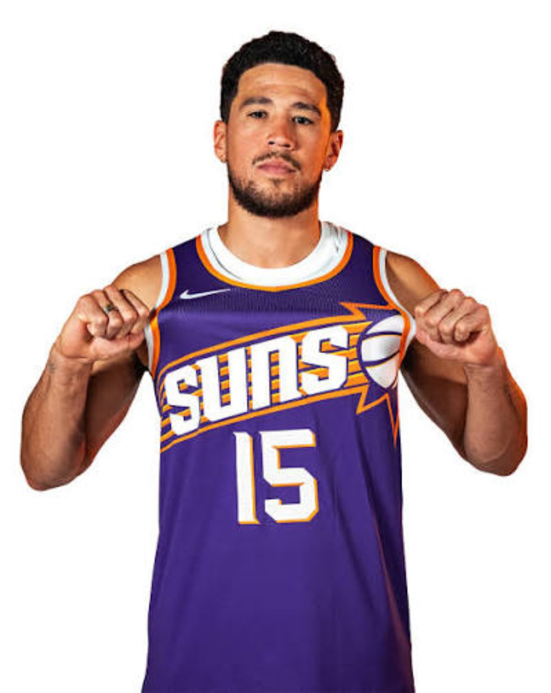
Devin Booker is still good enough to keep Phoenix relevant. He can carry scoring stretches, create in the midrange and organize late possessions. The next step for this roster is Jalen Green becoming a real secondary creator instead of just another scorer.
We want Green around 20-plus points and five or six assists with better decision-making. Dillon Brooks gives the defense edge and physicality. Miles Bridges adds another scoring forward, and Luke Kennard gives the bench elite shooting gravity. That is enough to stay in the playoff picture.
The danger is mediocrity. If Phoenix is at or below .500 near the deadline, the front office has to seriously consider what Booker could bring back in young talent and draft capital. If Green makes a leap and the team is clearly winning, ride it. But do not burn the future just to chase the eighth seed.
Booker has more creators, but who anchors the defense?
Phoenix's preseason finale, a 119–116 loss to Utah, looked like a dress rehearsal with the starters playing extended minutes. Devin Booker scored 16 with six assists, while Jalen Green and Dillon Brooks each added 18. There were encouraging stretches of offensive flow, with Green and Booker sharing creation rather than competing for touches. Khaman Maluach grabbed 12 rebounds and made a case for a bigger interior role, the sort of dirty work a guard-heavy team cannot survive without.
For us, the bigger questions remain on defense and in lineup balance. Who guards the elite wing while Booker and Green are closing? Can Maluach or another big finish defensive possessions without requiring a second helper every time someone drives? And when the third scorer catches fire, will that create quick decisions or more isolations? Phoenix does not need the preseason standings to validate anything; it needs evidence that its starting group can defend enough for Booker's offense to matter in April. The No. 20 position stays put until the structure earns more trust.
Washington Wizards
AJ's team is coming — but the season can accelerate.
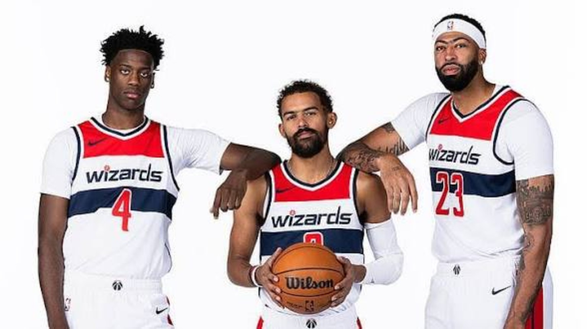
Washington is no longer a normal rebuild. Trae Young gives the offense a proven organizer, Anthony Davis gives the defense a star-level anchor when healthy, and underneath them is AJ Dybantsa, Alex Sarr, Tre Johnson, Bub Carrington and Kyshawn George.
AJ should begin behind Trae and AD in the hierarchy, then gradually be tested as a true first-option scorer after the All-Star break. Sarr is part of the future. Period. He is only 21, and this season should be about patience: rebounding, physicality, defensive positioning, finishing and confidence.
We also would not automatically trade AD just because Sarr develops. If Washington is legitimately in the six-to-ten range, the young players are contributing and AD is healthy, there is real value in letting them play meaningful games. If the veterans are dragging an unfinished roster and a strong offer appears, then listen. The measuring stick can rise during the season if the team earns it.
The young players are getting meaningful tests
Washington closed preseason with a 107–106 loss to New Orleans, but the score was secondary to the performances inside it. Anthony Davis posted 14 points and 11 rebounds; Kyshawn George added 14. No. 1 pick AJ Dybantsa put up 12 in 15 minutes before leaving after an ankle injury. We should not jump to conclusions about availability, but it is another reminder that Washington's best version depends on balancing promising youth with the veteran bodies around them.
The encouraging part was the team's defensive activity and the way younger players kept competing through the final possessions. We want Trae Young's passing to create easy shots instead of turning every set into an individual rescue mission. We also want Sarr to develop beside Davis, not imitate him; rim protection, rebounding and finishing are the early markers. AJ's scoring ceiling is obvious, but earning defensive trust and learning how to read an NBA defense are just as important. A patient, competitive season would represent real progress whether or not Washington reaches the playoffs.
Chicago Bulls
Development first — but a Play-In push is not crazy.
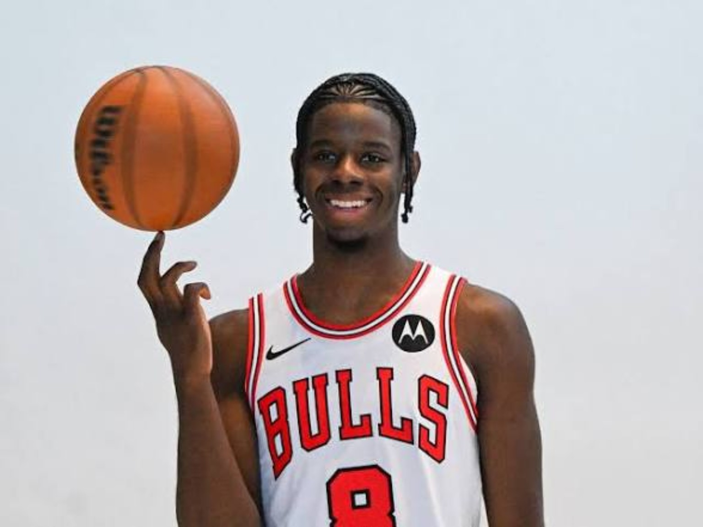
Chicago finally has a rebuild with actual structure. Josh Giddey is a legitimate lead guard who can rebound, organize and create. Matas Buzelis has a real chance to become one of the league's breakout forwards. And Caleb Wilson gives the roster a high-end frontcourt swing.
We like Wilson's archetype in the Rasheed Wallace / Jermaine O'Neal / Chris Bosh family — not because we are saying he becomes one of them, but because the appeal is similar: size, face-up skill, multi-level scoring potential and enough handle to create from different spots. His bag may actually be more advanced than people expect.
Tiago Splitter gets to build the habits. Norman Powell can absorb difficult veteran scoring possessions, while Nic Claxton gives the defense a backbone. If the kids naturally push this team toward 40 wins and a Play-In spot, embrace it. Just do not sacrifice development or assets to force it.
Caleb is already changing Chicago's energy
Chicago's 133–116 preseason win over Minnesota was another encouraging chapter for Caleb Wilson, who recorded 16 points, seven rebounds, four assists, two blocks and two threes. Earlier against Milwaukee, the Bulls made 20 threes while Matas Buzelis scored 19 with five triples. That is the offense we want in principle: Giddey finding shooters, Buzelis stretching the floor and Caleb supplying the athleticism and face-up versatility that makes simple actions more dangerous.
Wilson's 15.8 preseason points per game aren't a regular-season forecast, but they show he doesn't need an entire offense rebuilt around him to contribute immediately. We also like Leonard Miller's energy and improved control as another piece to evaluate. The concern remains defensive consistency against experienced scorers and whether the young bigs can handle physicality for 82 games. Splitter has a chance to establish a clear identity without forcing wins. Chicago stays at No. 22, but the preseason made this one of the more interesting development teams on the board.
Utah Jazz
Keyonte, Darryn and Ace need to become a real structure.
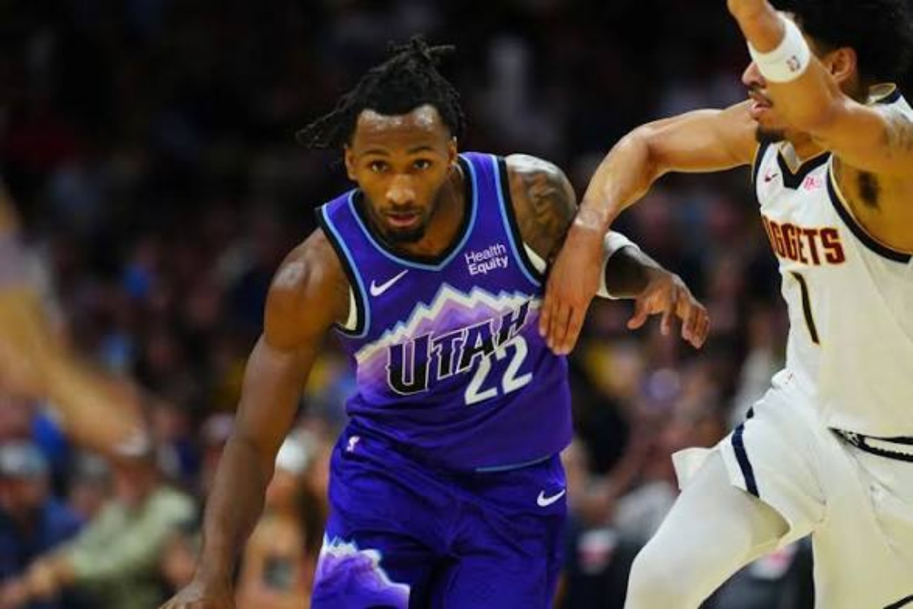
Keyonte George is not a placeholder. He is the current lead guard and offensive organizer, and we want to see something around 23 points and eight assists while still making the young wings better. Darryn Peterson arrives with star-guard upside and should gradually take on more late-game creation without being forced to own everything in October.
Ace Bailey may be the most interesting Utah development story after the Keyonte-Darryn pairing. His second-half rookie growth matters. We want a tighter handle, more consistent jumper, quicker reads and more defensive responsibility. If he becomes an 18-to-20-point two-way forward without dominating the ball, the roster suddenly fits much better.
Jaren Jackson Jr. gives Utah a veteran defensive anchor who still fits the timeline better than most established bigs. Lauri Markkanen remains a valuable scorer and a deadline decision if a contender offers a real haul. The point of the season is not to force wins. It is to know exactly who this team plans to be good with.
Peterson showed a late-game gear
Utah's 119–116 preseason win in Phoenix gave us a glimpse of why Darryn Peterson belongs in the big-picture discussion. The No. 2 pick finished with 13 points, six assists and six rebounds, scoring six of his points in the last five minutes. That willingness to create a shot when a game tightens up is encouraging, particularly because this team already has Keyonte George demanding the ball as its lead guard. Utah's Lauri Markkanen and Jaren Jackson Jr. combined for 36 in the same game, illustrating how many different kinds of talent are present.
The hard work is turning flashes into a hierarchy. Keyonte and Darryn both need meaningful on-ball reps, but their minutes should teach them how to help each other instead of creating a permanent competition for touches. Ace Bailey's off-ball decisions and Jackson's defensive communication are also central to the fit. The Jazz don't have to chase the Play-In in October; they need to find combinations that develop the prospects without leaving them helpless. The last preseason win was a preview of possibility, not proof of a finished team.
LA Clippers
Finally building an identity that does not depend on Kawhi.
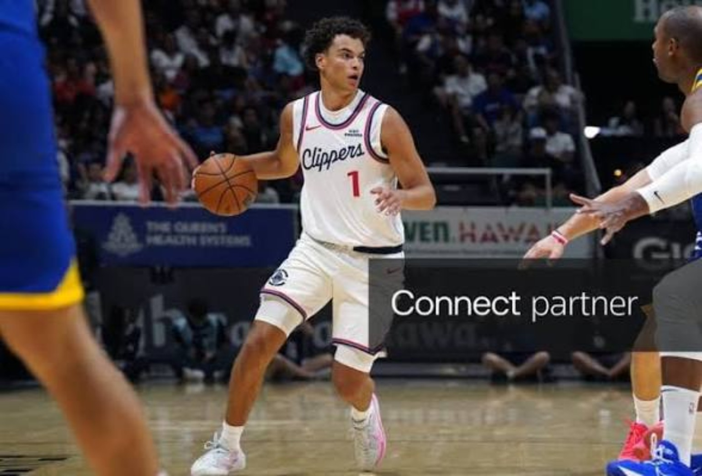
The Kawhi Leonard era is over. The Clippers now have Darius Garland, Brandon Ingram, Gradey Dick and rookie Keaton Wagler trying to define what comes next. Garland gives them a real lead guard and high-level pick-and-roll organization, which at least gives the transition some structure.
Ingram is the veteran scoring swing, but the heel surgery and partial Achilles issue make his availability a major variable. That could accelerate Wagler's development. The fifth pick may get more creation responsibility than planned, and by March he could be the most important player on the roster from a future-value standpoint.
Gradey is another young shooting wing worth real minutes. If Garland and Ingram stay healthy, the Clippers can be more competitive than No. 24 suggests. If the season stalls, the front office should turn older pieces into youth and assets instead of chasing a meaningless low seed.
Wagler belongs in the early rotation conversation
The Clippers' 122–110 preseason win over Denver had a couple of useful details. Darius Garland finished with 14 points and seven assists, looking capable of setting the table for teammates, while rookie Keaton Wagler contributed 12 points, five rebounds, four assists and three threes. That kind of varied production matters for a team moving into a new phase. A young guard who can shoot, make the extra pass and hold his own physically should be allowed to learn through real minutes instead of waiting for a perfect developmental environment.
Rui Hachimura's 16 points offered another example of how the Clippers might replace creation by committee. We still want to see how Brandon Ingram's availability affects the offense, and whether Garland can generate efficient looks without leaving the perimeter defense exposed. LA showed more functional offensive organization than its ranking might imply. We're leaving the team at No. 24 because preseason execution is only the beginning and the long-term roster direction remains unsettled.
Charlotte Hornets
The next era needs a hierarchy.
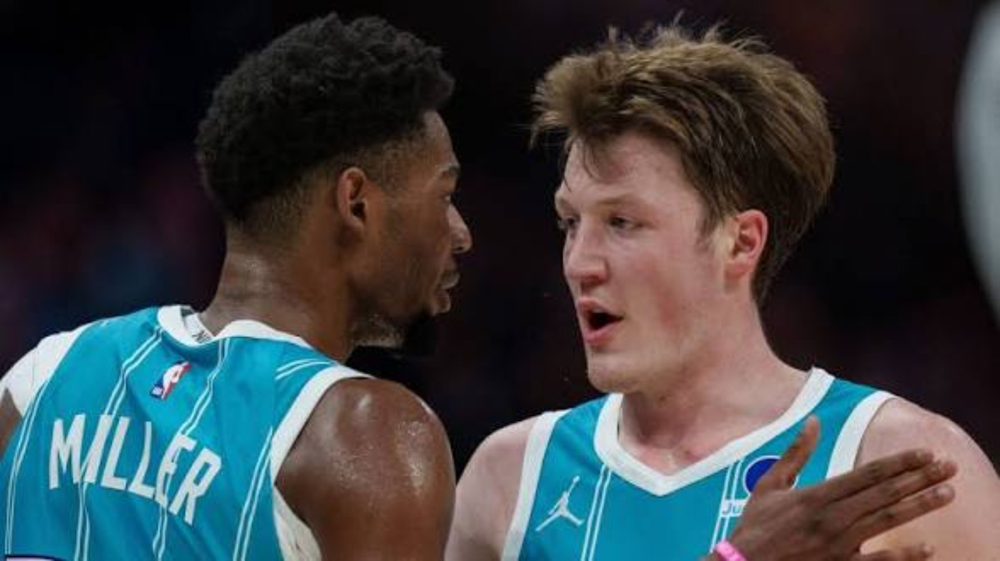
With LaMelo Ball gone, Charlotte finally gets a clean chance to answer the question that has been hanging over the roster: is Brandon Miller a true No. 1 scorer or a really good No. 2? That answer matters more than five extra wins.
Kon Knueppel is the cleaner complementary fit because he can shoot, move, make quick decisions and punish tilted defenses without needing to dominate the ball. Hannes Steinbach can become the type of big who makes both wings' lives easier by screening, rebounding, finishing and making the quick pass.
Christian Anderson is the longer-term lead-guard project. He does not need the keys immediately. He needs to learn how to organize Miller and Knueppel. Charlotte should care more about defense, role clarity and a real hierarchy than chasing the final Play-In spot.
The young supporting cast gave Charlotte something to study
Charlotte ended the preseason with a 116–98 loss at Memphis, but Hannes Steinbach's 19 points on 7-for-9 shooting and Christian Anderson's 15 points with six assists were worth more to the rebuild than the margin. Those are encouraging flashes of efficient finishing and guard organization. Miller does not need every possession to become a contested jumper if teammates can make a simple pass, set a hard screen or punish a defender who turns his head.
We are also watching how Kon Knueppel fits when everybody is available. His shooting should help open driving lanes for Miller, while Anderson can gradually learn to organize the attack. The challenge is physical defense and consistent late-clock creation: Charlotte cannot rely on two good stretches from rookies to solve an 82-game problem. We want an actual offensive pecking order by December and an improved defensive floor. The win total matters less than whether Miller gets a fair evaluation as a No. 1 option.
New Orleans Pelicans
Thirty wins is realistic. This exact roster lasting to February is not.
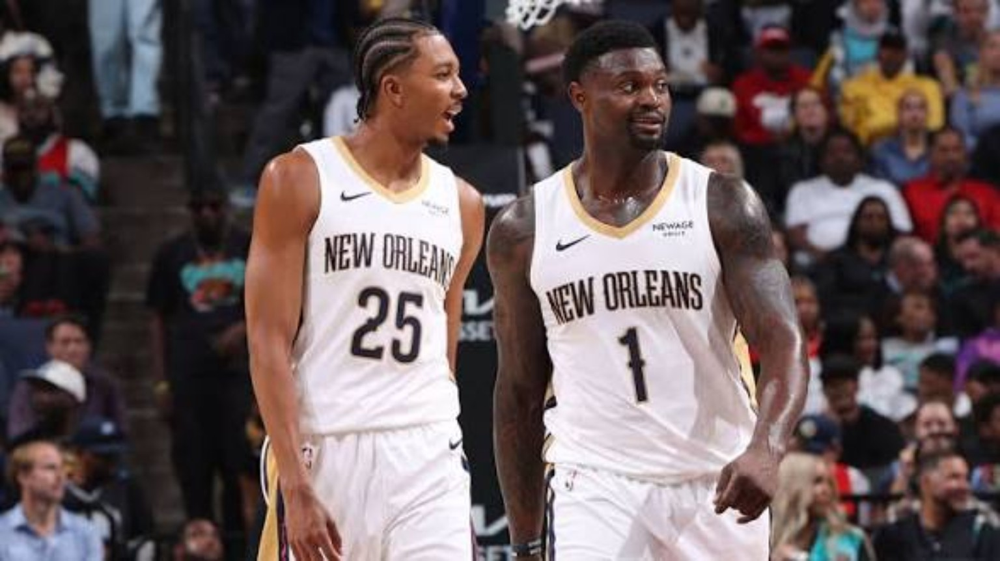
We are moving off the idea that New Orleans is automatically a 21-win team. With Fears and Queen entering Year 2, Trey Murphy, Bennedict Mathurin, Jones, Zion Williamson and Dejounte Murray around them, there is enough talent here to get into the 30-plus win range if the group is reasonably healthy.
The more interesting question is whether this exact team is still together by the trade deadline. Fears and Queen are the cleanest developmental priorities. We want to see whether Fears can become the long-term lead guard and whether Queen can become a real frontcourt piece. Mathurin and Jones should be evaluated for fit beside them.
Everybody else should have a price. Dejounte is an obvious value-maximization candidate. Zion should be shopped if the return truly resets the timeline. And even Trey Murphy should not be treated as untouchable just because he is an excellent fit — he is 26, and if New Orleans believes this is a full three-to-four-year rebuild, a premium offer has to be considered.
That does not mean dump Zion or Trey. It means listen. If Fears, Queen and the young group accelerate the timeline, keep the veterans who fit. If not, this is the team most likely to look completely different by February.
The young playmakers can win close possessions
New Orleans ended preseason by edging Washington 107–106, with Jeremiah Fears supplying 14 points and six assists. That is a meaningful performance for a second-year guard who must learn to control pace rather than simply race it. His handle created opportunities for others, and the Pelicans found enough execution to survive a late rally. The result fits the argument we made in the original ranking: this isn't a team that must automatically accept being noncompetitive every night.
We still want Fears and Derik Queen to be the development priorities, while Zion, Trey Murphy and the veterans establish what a viable version of this roster looks like. Can Fears get Zion an advantage before the defense collapses? Can Queen defend enough to stay involved in competitive fourth quarters? And can the club get reliable spacing when everyone is healthy? One narrow win doesn't answer the deadline questions. It does show a pathway toward a young core that knows how to finish possessions instead of just collecting highlights.
Memphis Grizzlies
Cam Boozer development season.
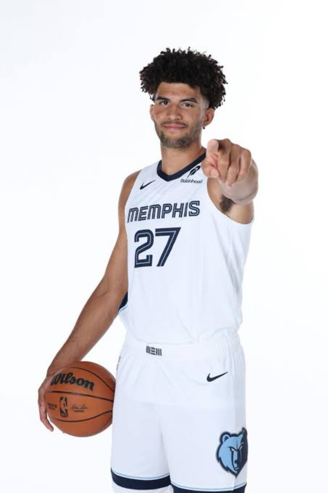
The old Ja Morant-Jaren Jackson Jr. era is over. Memphis does not need fake urgency. The season is about discovering whether Cameron Boozer can become the centerpiece of the next Grizzlies team.
Boozer should be one of the strongest Rookie of the Year candidates because the opportunity is real. Memphis can run offense through him at the elbow, test his jumper, give him post mismatches and let him learn through mistakes. Zach Edey makes the frontcourt experiment interesting because his size and interior presence can work if Boozer provides enough spacing.
Cedric Coward and Karim Lopez matter because the rebuild cannot become Boozer plus placeholders. Memphis needs two-way wings who can grow beside him. If the Grizzlies finish with a bad record but leave the year knowing Boozer is real, Edey fits and one or two wings belong, that is a successful season.
Boozer's game already translates
Memphis closed preseason 3–1, beating Charlotte 116–98 behind Cameron Boozer's 19 points, seven rebounds and three assists. Ty Jerome added 17 with three threes, a helpful example of how veteran guard play can create a functional environment around a rookie centerpiece. Boozer doesn't need to win Rookie of the Year in October. What impressed us is that his production came through several offensive actions, not only one mismatch or one hot shooting stretch.
The next step is how his presence changes the spacing for Zach Edey and the young wings. GG Jackson's better-looking preseason confidence is another encouraging development, and Memphis should use this season to distinguish real long-term pieces from empty-calorie scoring. We need to see Boozer respond when opponents take away his first move and make him read the floor. The loss column could still be ugly; the evaluation could still be a success. That is why the Grizzlies stay here despite some real individual optimism.
Sacramento Kings
The real story is the exit plan.
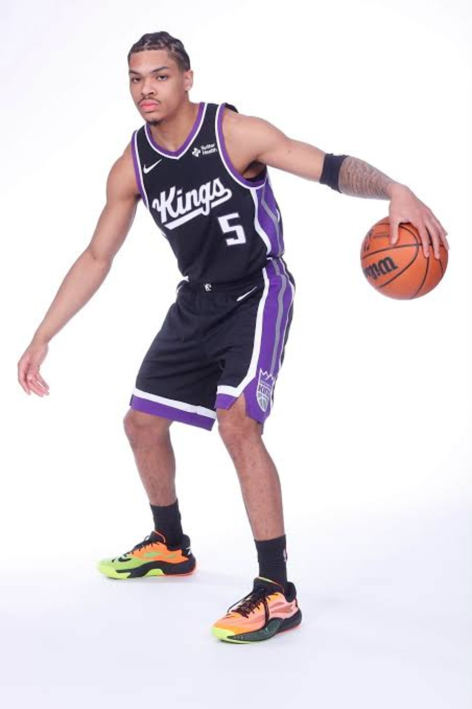
Sacramento should not pretend this is a playoff push. The season is about Darius Acuff Jr. learning how to run an NBA team while the front office decides how to move off the old core at the right price.
Acuff needs real control. Let him make turnovers. Let him learn how to get Domantas Sabonis touches, recognize when Zach LaVine needs the ball, use Malik Monk and find Keegan Murray in rhythm. That is how a rookie point guard develops actual team control.
Sabonis and LaVine should be shopped aggressively if the value is real. Monk is more of a depends-on-the-offer player because he can still help Acuff develop. Keegan is the younger veteran we would rather keep unless somebody overpays. Alex Karaban is a nice late-first fit because his shooting and feel make the floor easier for a young point guard.
A rough finale is a useful developmental warning
Sacramento's 126–97 preseason loss in San Antonio wasn't an encouraging scoreboard, particularly with the Spurs building a huge first-half lead. Ben Simmons nearly posted a triple-double with 14 points, eight rebounds and seven assists, but the Kings did not have the defensive organization or sustained shot creation to keep pace. For a team introducing Darius Acuff Jr. to the league, those possessions tell us more about the work ahead than a close exhibition win would have.
Acuff has to learn how to control two different speeds: running when the advantage is available and getting Sabonis, LaVine, Monk and Keegan Murray into purposeful half-court sets when it isn't. Sacramento can use its veterans as teachers without allowing them to dominate every late-clock touch. We also want defensive commitment from the roster's established players so young mistakes don't become an excuse for bad habits. This was not a preseason worth reading as a playoff forecast. It was a reminder that the rebuilding process requires structure, even when the team still has notable names.
Milwaukee Bucks
The rebuild is the season.
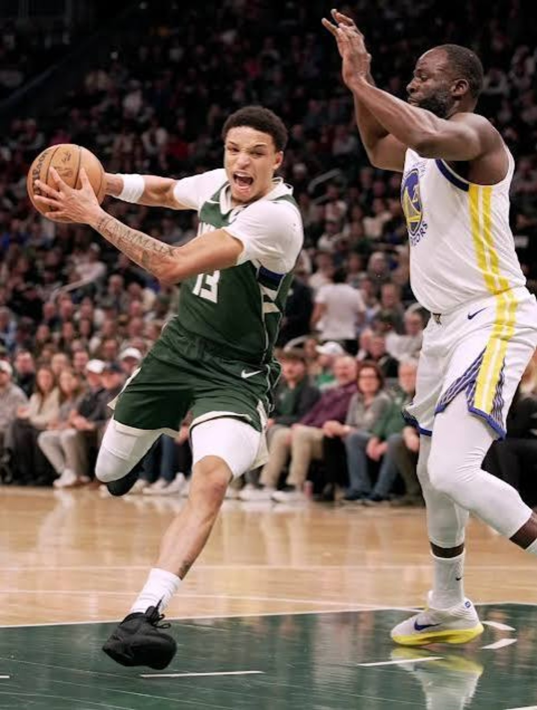
Milwaukee is finally rebuilding after the Giannis era, and the worst thing it could do is chase 30 wins just to feel respectable. Tyler Herro can keep the offense functional, but the real work is evaluating the younger core.
Kel'el Ware may be the most important young big on the roster. Brayden Burries is the first major draft building block of the post-Giannis era, and Nate Ament may have the higher offensive ceiling. Ryan Rollins and Jaime Jaquez Jr. should also get real evaluation because good rebuilds need rotation pieces, not just stars.
Kyle Kuzma is the obvious veteran trade priority. Kevin Porter Jr. is more complicated because his age and offensive skill could make him useful or valuable on the market. Herro should not be untouchable either if a team offers a real package. The goal is to leave the season with a clearer young core and another premium draft asset.
Even a rebuilding team can identify useful habits
Milwaukee edged Indiana 128–127 in overtime, and Tyler Herro's 25 points with five threes showed why a veteran scorer can keep a young roster competitive without being the long-term centerpiece. The Bucks fought back after trailing big, and their offensive rebounding produced extra chances. Earlier, rookie Brayden Burries put up 19 points, five rebounds, five assists and four steals in a loss to Chicago. Those are the two very different sides of a rebuilding year: veteran shotmaking and young players learning to impact multiple categories.
We want to see Kel'el Ware build on his active preseason work and become a real rim presence, while Burries and Ament receive opportunities that demand decisions rather than ceremonial minutes. We also don't want Milwaukee mistaking a close win for a reason to chase every eighth-seed veteran. The focus should be defensive principles, rebounding and finding the right future backcourt combinations. No. 29 isn't a judgment on Herro's talent; it's a reflection of the franchise's stage.
Brooklyn Nets
The rebuild needs a face.
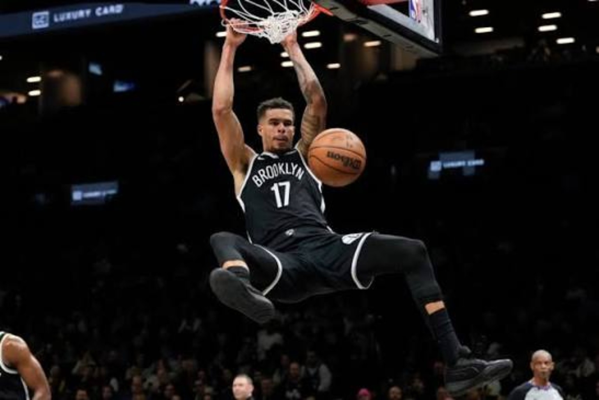
Brooklyn has the cleanest rebuild on the board because there is no reason to fake urgency. Mikel Brown Jr. enters a young guard room with Egor Demin and Nolan Traore, and the season should function like an internal competition for the future.
Brown does not have to average 20. He has to separate himself. Can he score efficiently, defend, create advantages and play next to another creator? Demin and Traore are not placeholders either. Brooklyn should let the season decide who deserves the biggest role instead of awarding it by draft slot.
Julius Randle and Michael Porter Jr. raise the floor, but neither should block the rebuild. We would not be surprised if one or both are gone by the deadline. If the offers are weak, keep them and let them help the kids. If a contender offers meaningful picks or a young player, Brooklyn should cash the value in.
Joshua Jefferson is the kind of low-usage rookie who can earn minutes by defending, rebounding, cutting and moving the ball. By April, the Nets need a real pecking order, more future value and at least one young player who looks like more than a complementary piece.
The offense flashed, but the defense still leaked
Brooklyn finished preseason with some encouraging offensive moments, including Michael Porter Jr.'s 27 points and four threes against Miami. But the Nets allowed 144 in that loss, and the larger concern is how often opponents reached high-percentage looks. Brooklyn's younger guards can pressure the ball and create turnovers; what hasn't become dependable is containing the first drive and protecting the rim once that initial pressure breaks down.
Mikel Brown Jr. received a limited preseason runway, so we are not using early minutes or exhibition averages as a verdict on him. Egor Demin and the other guards deserve real chances to make mistakes and learn to organize the floor. Randle and Porter can score enough to make games entertaining, but those touches have to teach the youngsters something. By February we want a clearer hierarchy and fewer possessions that collapse after one missed rotation. The 30th slot stays, even though there are individual pieces worth watching.
THIS IS THE BASELINE.
THE SEASON DOES THE REST.
Oklahoma City opens at the top because the floor is the highest. New York gets champion respect. San Antonio and Philadelphia carry Finals pressure. Minnesota and Miami made the kind of moves that can change the league. And from Portland down, the deadline may matter as much as the standings.
That is the point of a preseason board: not to pretend we already know the ending, but to establish what every team has to prove before the games start changing the conversation.